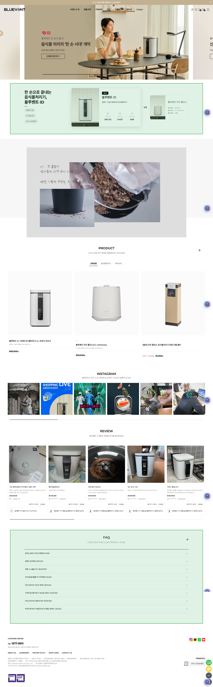

최종 완료 보고
BLUEVENT GEO 개선 완료 보고서
As-Is 분석부터 To-Be 구조화, 그리고 정량적 성과 측정까지
NEXT CHAPTER
1. 프로젝트 개요
블루벤트 GEO 현황 및 개선 방향 도출
PROJECT OVERVIEW
프로젝트 개요 — 배경 · 목표 · 대상
배경 · 왜 지금인가 AS-IS PROBLEM
목표 · 무엇을 달성할 것인가 TO-BE GOAL
1
크롤러 접근 가능한 인프라 확보
robots.txt 정비, sitemap.xml 생성·제출, canonical 정규화로 AI 크롤러가 공식 페이지를 발견할 수 있게 한다.
2
AI가 읽을 수 있는 텍스트 제공
메인/상세페이지에 대표 문장·스펙·FAQ를 텍스트로 제공하여 AI가 공식 출처에서 직접 읽고 인용할 수 있는 상태를 만든다.
3
구조화 데이터로 페이지 의미 명확화
Organization / WebSite / Product / FAQPage 스키마로 페이지 의미·브랜드 정보를 AI에게 정확히 전달한다.
PoC 범위
IA 현행 유지. 메인/상세페이지 중심의 테크니컬 GEO 개선에 한정. 콘텐츠 전략·광고는 별도 과제로 분리.
메인 페이지
블루벤트 ID 상세 페이지
블루벤트 무무 상세 페이지
NEXT CHAPTER
2. As-Is → To-Be 변경사항 요약
크롤링 인프라부터 상세페이지 구조화 포인트 스터디
KEY MODIFICATIONS
As-Is → To-Be 요약 테이블
NEXT CHAPTER
3. 결과 — 전/후 화면 비교
시맨틱 및 데이터 마크업 적용에 따른 실측 결과
GEO 적합 점수 — AS-IS vs TO-BE
GEO 적합 점수
37
→
86
심각한 문제 수준
→ 대체로 효과적
주요 개선 포인트
- • 크롤링 인프라 정비
- • 핵심 텍스트화
- • 구조화 데이터 적용
- • 메타·헤딩 구조 정비
A. 콘텐츠 구조 (Structure)
10/30
→
25/30
83%
헤딩(H1~H3), TL;DR 요약 블록, 섹션별 앵커 텍스트 정비
B. 정보 가치 (Information Gain)
7/25
→
20/25
80%
스펙 텍스트화, 사실형 문장, FAQ 추가로 AI 인용 가능 정보량 확보
C. 브랜드/신뢰도 (Entity Authority)
5/20
→
20/20
100%
Organization Schema, 브랜드 정의 문장, 공식 정보 텍스트화로 엔티티 권위 확보
D. 기술적 요소 (Technical)
7/15
→
13/15
87%
Schema(Article, FAQPage) 적용, alt 텍스트 규격화, 내부 링크 정비
E. 명확성 (Clarity)
8/10
→
8/10
80%
AS-IS에서도 한국어 키워드 명확성은 양호. 유지 수준.
메인 홈페이지
AS-IS · 개선 전

- Title/Description 미최적화 — 브랜드 USP 미반영
- H1이 브랜드+핵심 키워드를 포함하지 않음
- TL;DR/요약 텍스트 블록 없음
- Organization/WebSite/BreadcrumbList 스키마 미적용
TO-BE · 개선 후

- Title/Description 확정·적용 — 브랜드 USP 포함
- H1이 브랜드+핵심 키워드를 포함함
- 요약 영역 및 FAQ 영역 존재
- Organization/WebSite/BreadcrumbList 스키마 적용됨
제품 상세페이지
블루벤트 ID
블루벤트 무무
AS-IS · 개선 전
- 텍스트 표/목록 부재 (텍스트 크롤링 불가)
- H1~H3 구조로 ‘기능/스펙/FAQ’ 정보 계층 부재
- 이미지 alt 누락되거나 무의미하게 작성됨
- Product 스키마 미적용
TO-BE · 개선 후
- 제품 스펙이 텍스트 표/목록으로 명확히 존재함
- H1~H3 구조로 ‘기능/스펙/FAQ’ 정보 계층 정비
- 이미지 alt 규격화 (브랜드/제품/내용 포함)
- Product 스키마 적용됨
NEXT CHAPTER
4. 결과 지표(정량 포함)
AI 모델별 인용률 측정 결과 및 비교
질문 세트
총 9개 문항
브랜드 인식
블루벤트는 어떤 회사고, 어떤 제품을 판매하나요?
카테고리 추천
가정용 음식물처리기 추천해줘. 분쇄식으로 조용하고 탈취 잘 되는 거 찾고 있어.
카테고리 추천
음식물처리기 구매할 때 브랜드별로 어떤 차이가 있나요? 국내 주요 브랜드 비교해줘.
카테고리 추천
필터 교체 주기를 앱으로 확인하고 원격 제어할 수 있는 음식물처리기 브랜드는 어디야?
제품 스펙
블루벤트 ID 음식물처리기 스펙이랑 주요 기능 알려줘.
제품 추천
사용, 청소, 관리하기 제일 쉬운 음식물처리기 추천해줘
신규 추가
제품 추천
국내에서 직접 개발해서 믿을만한 음식물처리기 추천해줘
신규 추가
브랜드 인지
블루벤트 브랜드에 대해 알려줘
신규 추가
제품 추천
음식물 처리기 추천해줘
신규 추가
AI 모델별 인용률 측정 결과 — AS-IS
2026-03-04 ~ 2026-03-23
측정 방법: 4개 AI 모델 × 10개 질문
O 정확 인용
△ 부분 인용
X 미인용
| 모델 \ 질문 | Q1 브랜드 인지 | Q2 제품 추천 | Q3 제품 추천 | Q4 제품 추천 | Q5 제품 스펙 | Q6 제품 추천 | Q7 제품 추천 | Q8 브랜드 인지 | Q9 제품 추천 | 전체 인용률 |
|---|---|---|---|---|---|---|---|---|---|---|
| Gemini | 29%O:2 △:3 X:2 | 0%X:7 | 0%X:7 | 0%X:7 | 0%△:7 | 6% | ||||
| Claude | 29%O:2 X:5 | 0%X:7 | 0%X:7 | 57%O:4 X:3 | 0%△:4 X:3 | 17% | ||||
| ChatGPT | 0%△:4 X:3 | 14%O:1 X:6 | 0%X:7 | 43%O:3 X:4 | 0%△:3 X:4 | 11% | ||||
| Perplexity | 29%O:2 X:5 | 0%X:7 | 0%X:7 | 57%O:4 X:3 | 0%△:1 X:6 | 17% |
주요 관찰: Q4(앱 원격제어) 항목에서 Claude, Perplexity는 57%, ChatGPT도 43%로 상대적으로 높은 인용률을 보임. 반면 Q3(브랜드 비교)는 전 모델 0% — 비교 콘텐츠 부재가 원인으로 추정. Q5(ID 스펙)는 전 모델 0% — 스펙이 이미지 안에만 존재하는 AS-IS 구조의 직접적 결과.
AI 모델별 인용률 비교 — TO-BE 리테스트
개선 후 재측정
| 모델 | AS-IS 전체 인용률 | TO-BE 전체 인용률 | 증감 | 비고 (주요 개선 포인트 연결) |
|---|---|---|---|---|
| Gemini | 6% | TBD |
TBD |
메인/상세 텍스트화 + 스키마 반영 여부 |
| Claude | 17% | TBD |
TBD |
robots.txt 허용 후 공식몰 인용 증가 여부 |
| ChatGPT | 11% | TBD |
TBD |
robots.txt 허용 + 제품 스펙 텍스트 인용 여부 |
| Perplexity | 17% | TBD |
TBD |
공식 URL 출처 비율 상승 여부 |
※ To-Be 인용률은 개선 적용 후 크롤러 반영 기간(최소 2주) 경과 후 측정. 본 페이지에서는 측정 프레임워크만 확정하며, 실제 수치는 추후 업데이트됩니다.